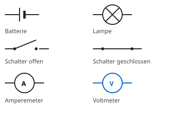

Der Schaltplan
Mit einem KI-Tutor lernen
Ein KI-Tutor erklärt dir diese Seite und hilft dir bei den Übungen. Wähl deinen Assistenten:
Mit Claude öffnen Mit ChatGPT öffnen Mit Mistral Vibe öffnen
Du nutzt dein eigenes Konto beim Anbieter. Der Assistent ist kein Angebot von lernapps.net: lernapps liefert nur Inhalte und Übungen. Die Wahl gilt für alle Seiten, nur auf diesem Gerät.
Warum?
Einen Stromkreis mit echten Bauteilen zu zeichnen ist umständlich. Wie halten Fachleute eine Schaltung schnell und für alle verständlich fest?
Erklärung
Im Schaltplan steht für jedes Bauteil ein einfaches Zeichen, das Schaltzeichen. Die Leitungen sind gerade Linien mit rechten Winkeln.
- Schaltplan
Ein Schaltplan zeigt mit Schaltzeichen und Linien, wie die Bauteile eines Stromkreises verbunden sind.

Merke dir vor allem den Kreis mit Kreuz für die Lampe und den Unterschied zwischen offenem und geschlossenem Schalter.
Quelle: eigene Zeichnung. Lizenz: CC-BY-4.0.Der lange Strich der Batterie ist der Pluspol, der kurze dicke Strich der Minuspol.
Beispiel
Einen Schaltplan zeichnen
Du willst eine Batterie, einen Schalter und eine Lampe zeichnen.
- Zeichne die Schaltzeichen der drei Bauteile mit Abstand.
- Verbinde sie mit geraden Linien zu einem geschlossenen Rechteck.
- Prüfe, dass die Linie nirgends unterbrochen ist, wenn der Schalter geschlossen sein soll.
Übung
Übung
Lösung
Richtige Antwort: Lampe – Kreis mit Kreuz; Amperemeter – Kreis mit A; Voltmeter – Kreis mit V; Batterie – langer und kurzer Strich
Jedes Bauteil hat ein festes Schaltzeichen. So versteht jeder denselben Plan.
Mehr dazu:
Übung
Lösung
Der Schalter ist offen, der Stromkreis ist unterbrochen. richtige Antwort
Der schräge Strich berührt den zweiten Kontakt nicht. Es gibt eine Lücke.
Der Schalter ist geschlossen, die Lampe leuchtet.
Ein geschlossener Schalter wird als gerader Strich gezeichnet, der beide Kontakte verbindet.
Der Schalter ist defekt.
Das Zeichen sagt nur, ob der Schalter offen oder zu ist, nicht, ob er funktioniert.
Ein schräger Strich ohne Verbindung steht für einen offenen Schalter.
Mehr dazu: